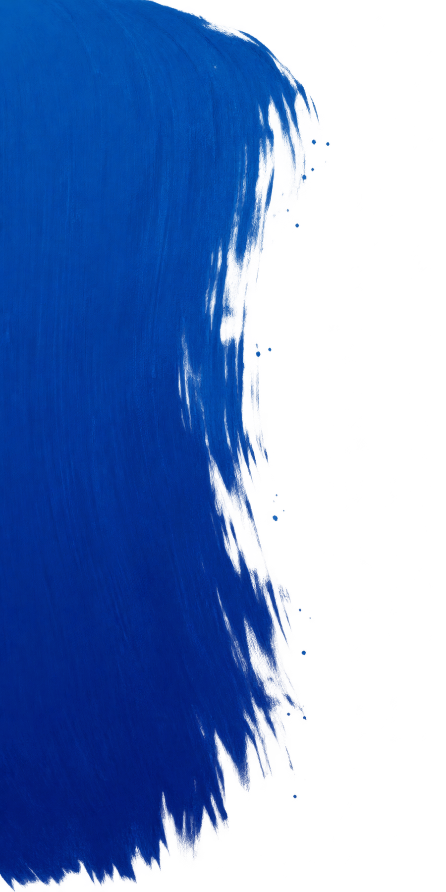

ともに、
つくる。
ごあいさつ
MESSAGE
みなと川市で生まれ育ち、地元の企業で12年間、地域の物流を支える仕事をしてきました。
子育て、介護、通勤。毎日の暮らしの中で「ここが変われば楽になるのに」という声を、たくさん聞いてきました。
その声を、市政に届ける役割を担いたい。できることから確実に形にしていきます。
青山ゆうと
※制作見本(B案・参考サイト準拠)。人物・市町村・政策はすべて架空です。

ともに、
つくる。
MESSAGE
みなと川市で生まれ育ち、地元の企業で12年間、地域の物流を支える仕事をしてきました。
子育て、介護、通勤。毎日の暮らしの中で「ここが変われば楽になるのに」という声を、たくさん聞いてきました。
その声を、市政に届ける役割を担いたい。できることから確実に形にしていきます。
青山ゆうと
放課後の居場所を全小学校区に。一時預かりの予約をスマホで完結。
避難所の備蓄と案内表示を見直し、自治会の防災訓練を後押し。
コミュニティバスの路線と本数を、利用者の声で見直します。
窓口に行かなくて済む手続きを増やし、書類の負担を減らします。


駅前で朝のごあいさつ。路線バスへのご意見をいただきました。

子育て中の保護者の皆さんと意見交換会。

町内会の防災訓練で備蓄品を確認しました。